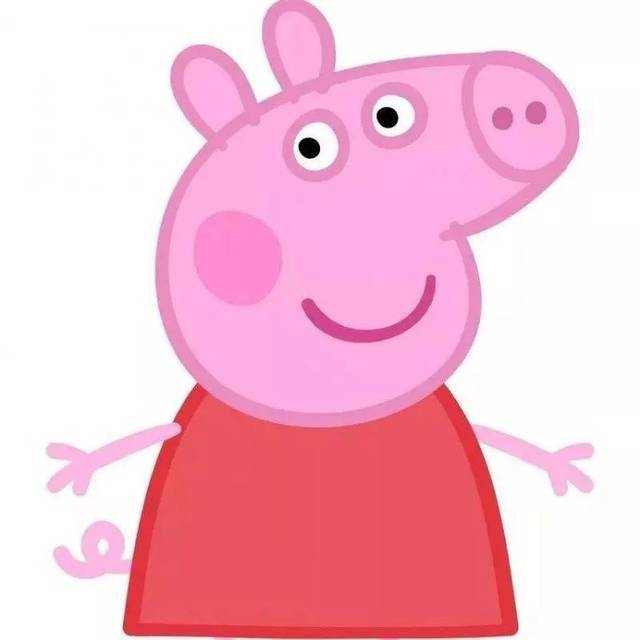

猪佩奇(应聘前端工程师)

性别：男 年龄：25岁
手机：13066668888
邮箱：zhupeiqi@gmail.com
籍贯：海南·三沙市
现居：海南·三亚市
微信：zpq028
工作经历
切图仔2017年7月—2018年10月
猪乔治科技有限公司
佩奇是一只非常可爱的小猪，她和她的妈妈、爸爸以及弟弟乔治生活在一起。 她和弟弟一样很喜欢恐龙，尤其是马门溪龙。她最喜欢跳泥坑，最喜欢吃的是意大利面和巧克力蛋糕， 最喜欢扮成小仙女公主，最喜欢喝橙汁，很喜欢去拜访她的姥姥爷爷和到伯父伯母家玩。
前端开发2018年11月—2019年6月
猪爸爸科技有限公司
猪爸爸是佩奇和乔治的爸爸，会开车，也会做饭。 有时有点迷糊，但非常疼爱佩奇和乔治，也非常喜欢逞强， 经常说自己是某方面的专家（实际上他基本全都不擅长），是跳泥坑的世界冠军。
教育经历
小羊苏西科技大学
土木工程专业
本科 前30%
项目经历
帮助羊羊们应对狼的骚扰
小羊的名字根据它们的个性采用了俗语的谐音词，喜羊羊用的是“喜气洋洋”，由于它的形象更正面些，取代懒羊羊成了主角。
与灰太狼家族之间斗智斗勇
喜羊羊是青青草原羊村的绵羊，大肥羊学校的学生、村长慢羊羊的助手。 羊族著名科学家智羊羊和曾经风靡海陆空三栖动物歌星丽羊羊的儿子，被委任为下一任羊村村长。
个人技能
- HTML
- 超文本标记语言（英语：HyperText Markup Language，简称：HTML）是一种用于创建网页的标准标记语言。 您可以使用 HTML 来建立自己的 WEB 站点，HTML 运行在浏览器上，由浏览器来解析。
- CSS
- 层叠样式表 (Cascading Style Sheets，缩写为 CSS），是一种 样式表 语言，用来描述 HTML 或 XML（包括如 SVG、MathML、XHTML 之类的 XML 分支语言）文档的呈现。 CSS 描述了在屏幕、纸质、音频等其它媒体上的元素应该如何被渲染的问题。
- JavaScript
- JavaScript 是一门编程语言，可为网站添加交互功能。（例如：游戏、动态样式，动画，以及在按下按钮或收到表单数据时做出的响应，等）。 本文介绍了 JavaScript 的精彩之处和主要用途。
自我批评
佩奇的弟弟，已经上幼儿园了。性格非常像现实中的小男孩，活泼调皮， 喜欢吃意大利面和巧克力蛋糕，喜欢喝果汁，最最喜欢的是恐龙，自己有个恐龙玩具， 无论是谁问他问题，他总回答“恐龙！”尤其是马门溪龙。最喜欢跳泥坑。